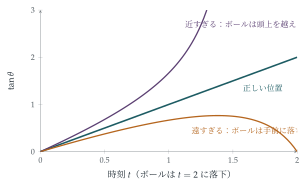

STEP II 1998、第11問
先に進む前に問題を読んでおこう。問題は STEP Support Programme の問題データベースにある： step.maths.org/questions/98-s2-q11
導入
ボールが外野へ高く打ち上げられる。うまい野手はすぐに走り出し、ボールが落ちてくるちょうどそのときにその地点へ到着する。なぜそんなことができるのだろうか。放物運動（projectile motion）の方程式を一瞬のうちに頭の中で解ける人などいないし、そもそも野手はボールの速さも角度も知らない。それでも野手は、そしてフリスビーをキャッチする犬も、これを日常的にやってのけるのである。
1968年、物理学者 Seville Chapman がひとつの答えを提案した。この問題はそれを証明するものである。野手がボールの仰角（angle of elevation）\(\theta\) を見ていて、\(\tan\theta\) が一定の割合で増加するように動けば、ボールが落ちる地点にぴったり到着する。物理の知識は何もいらない。必要なのは、ボールが一定の速さより速く上がって見えるか遅く上がって見えるかに気づく能力だけである。難しい予測の問題が、単純なフィードバック（feedback）の規則に置き換えられるのである。
取りかかる前に
打者を原点に、野手を距離 \(D\) の位置に置く。ボールが \((x, y)\) にあるとき、\(\tan\theta\) はいくらか。
ボールは野手の目の高さより \(y\) だけ上にあり、野手の前方、水平距離 \(D - x\) のところにある（ボールは野手に向かってくる）。したがって \(\tan\theta = \frac{y}{D - x}\) である。
順を追って解く
段階 1 完璧な位置にいる野手
ボールの水平方向の速さを \(U\)、鉛直方向の初速を \(W\) とし、ボールが時刻 \(T\) に（目の高さに）落ちてくるとする。\(x\)、\(y\)、\(D\) を \(U\)、\(W\)、\(T\)、\(g\)、\(t\) で表せ。\(y\) を因数分解できるか。
\(x = Ut\)、\(y = Wt - \frac12gt^2\) であり、ボールは \(T = \frac{2W}{g}\) に目の高さに戻ってくる。そこに野手がいるので \(D = UT\) である。\(W = \frac12gT\) であるから、 \[y = \tfrac12gt(T - t), \qquad D - x = U(T - t).\] 因数 \(T - t\) が約分できて、 \[\tan\theta = \frac{\frac12gt(T - t)}{U(T - t)} = \frac{g}{2U}\,t.\] よって \(\frac{\mathrm{d}}{\mathrm{d}t}\tan\theta = \frac{g}{2U}\) であり、これは定数である。■
段階 2 走る野手
今度は野手が距離 \(D_0\) の位置から出発し、打者に向かって速さ \(v\) で走るとする。このとき野手の位置は \(D_0 - vt\) である。野手は時刻 \(T\) にボールを捕る。\(D_0\) はいくらか。同じ計算を繰り返せ。
時刻 \(T\) にボールを捕るには、野手はボールが落ちる地点にいなければならない。すなわち \(D_0 - vT = UT\) であり、\(D_0 = (U + v)T\) である。野手とボールの水平距離は \(D_0 - vt - Ut = (U + v)(T - t)\) であり、ここでも因数が約分できる： \[\tan\theta = \frac{\frac12gt(T - t)}{(U + v)(T - t)} = \frac{g}{2(U + v)}\,t.\] したがって、ちょうどよい速さで走っていれば、\(\tan\theta\) は一定の割合で増加する。
問題が求めているのは逆（converse）である。\(\frac{\mathrm{d}}{\mathrm{d}t}\tan\theta\) が一定になるように走れば、野手はボールを捕れるだろうか。
野手が速さ \(v\) で走り、\(\tan\theta = \frac{\frac12gt(T - t)}{D_0 - (U + v)t}\) が一定の割合 \(c\) で増加するとしよう。すると \(\tan\theta = ct\) である（\(t = 0\) で \(0\) となるからである）。このとき \[\tfrac12g(T - t) = c\bigl(D_0 - (U + v)t\bigr) \quad\text{任意の } t.\] \(t\) の係数と定数項を比較する（comparing coefficients）と、\(\frac12g = c(U + v)\) および \(\frac12gT = cD_0\) を得る。辺々割ると \(D_0 = (U + v)T\) となり、これはまさに時刻 \(T\) に落下地点にいるための条件である。したがって野手は、\(\tan\theta\) が一定の割合で上がり続けるように \(v\) を選べばよく、そうすればボールを捕ることができる。■

振り返り
共通因数を探せ。高さと水平距離のどちらにも \(T - t\) が含まれており、それを約分することで \(\tan\theta\) が一次式になった。
逆を証明せよ。この規則がうまくいくこと（捕球につながること）を示すには、係数を比較する逆向きの議論が必要であった。
知覚しやすい不変量（invariant）。\(\tan\theta\) が一定の割合で上がっているかどうかは目で判断できるが、落下地点はそうはいかない。
背後にある数学
光学的加速度の打ち消し
Chapman の規則は現在、光学的加速度の打ち消し（optical acceleration cancellation）と呼ばれている。野手は「光学的加速度」\(\frac{\mathrm{d}^2}{\mathrm{d}t^2}\tan\theta\) を \(0\) に保つように動くのである。ボールの像が加速しながら上がっていけば、ボールは頭上を越えるので後ろに下がる。減速していけば、ボールは手前に落ちるので前に走る（図 11.11.1）。この戦略はボールがどこに落ちるかを教えてはくれないが、野手をそこへ導いてくれる。これはフィードバック制御則（feedback control law）であり、誘導ミサイルを操縦する制御則と同類のものである。ミサイルは比例航法（proportional navigation）を用いて、目標への視線角を一定に保つ。これは同じ考え方を横方向に適用したものである。
野手が実際にしていること
実際の野手は Chapman の規則を使っているのだろうか。1990年代に、野球の外野手の頭にカメラを取り付けて行われた実験では、結果はまちまちであった。Michael McBeath らは1995年にScience誌上で、横方向に打たれたボールに対しては、野手は視野の中でボールの像が直線上を動き続けるような曲線経路を走っており（「線形光学的軌道」）、これによってもやはり捕球に至ると論じた。その後の研究では、両方の戦略、さらにそれらを組み合わせたものが使われていること、また野手は一定の速さで走るとは限らないことが示唆されている。2004年の研究では、フリスビーをキャッチする犬が同じ光学的規則と整合する経路をたどることがわかった。細部はどうであれ、驚くべき結論は揺るがない。捕球に予測は必要なく、必要なのは適切なフィードバックだけなのである。
Seville Chapman の「Catching a baseball」（野球のボールを捕る）は1968年にAmerican Journal of Physics誌に掲載された3ページの論文であり、本質的にこの問題の計算そのものが書かれている。Chapman は、この戦略が空気抵抗のない場合にしか成り立たないこと、そして実際の野球のボールの軌道は抗力と回転によってゆがめられ、事情が複雑になることを指摘している。それでも、脳が視野の単純な不変量を利用して複雑な制御問題を解いているという考え方は、心理学やロボット工学において重要なものとなった。
思考のスキル
ある量を予測するのが難しいときは、それに関連していて、直接観察でき、しかも物事が順調に進んでいるときにちょうど単純なふるまいをする量を探せ。
ここでは落下地点を予測するのは難しかったが、\(\tan\theta\) の変化率を監視するのは容易であった。大学では、これはフィードバック制御の考え方であり、必要な情報を表す観測量をどう選ぶかという考え方でもある。
次の一歩
後ろ向きに走る。ボールが野手の出発位置より後ろに落ちる場合、野手は打者から遠ざかる向きに走るべきであり、同じ規則が成り立つことを示せ。
\(\theta\) そのものではない。完璧な位置にいる野手について、\(\frac{\mathrm{d}\theta}{\mathrm{d}t}\) は一定でないことを示せ。なぜ見るべき量は \(\tan\theta\) なのか。
目の高さ。ボールが野手の目の高さより \(h\) だけ低い位置から打たれた場合、うまく位置取りした野手にとって、\(\tan\theta\) は依然として \(t\) の一次式か。（野手は目の高さで捕球するものとする。）
空気抵抗。速度に比例する空気抵抗があると、水平方向の速度は指数関数的に減衰する。うまく位置取りした野手にとって、\(\tan\theta\) は依然として \(t\) の一次式か。
さらに学ぶために
Seville Chapman, “Catching a baseball”, American Journal of Physics 36 (1968).（野球のボールを捕る）
Michael McBeath, Dennis Shaffer & Mary Kaiser, “How baseball outfielders determine where to run to catch fly balls”, Science 268 (1995).（野球の外野手はフライを捕るためにどこへ走るかをどう決めるか）
Dennis Shaffer et al., “How dogs navigate to catch Frisbees”, Psychological Science 15 (2004).（犬はフリスビーを捕るためにどう進路をとるか）